|
Stopping Sounds |
| Navigation |
Well, you can start a sound, which works great for one-off effects. But what if you need to stop a sound? Say a level ended and the music needs to be stopped.
Requisite Terminology
New Terminology
Steps
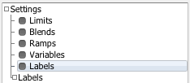
This is where you create new labels for use everywhere in Miles Studio. The "Labels" tree node below it is a container for all created labels, allowing easy access for assignment.
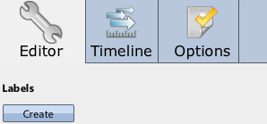
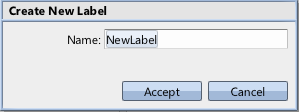
At this point, you've created a Label that can be applied to started sounds. In this way you can categorize the sounds you start, and use that categorization to find sounds once they've been started. In the Asset List a new entry has been created for your new label under the tree node "Labels".
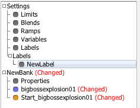
Now the sound that is started by that event will be assigned that label.
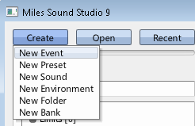
Events start completely empty, and must be populated by Event Steps.
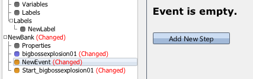
When adding a new step, a Start Sound event step is added by default.
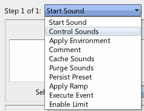
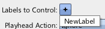
In this guide, we want to only affect sounds started using the label we created in step 3. By default, a control sounds event step contains an empty label query, which matches all sounds. By adding our label, we've set the label query to match any sound that was started with this label, and so the Control Sounds will only affect those sounds.
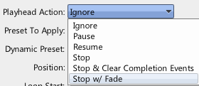
Stop with fade will fade the sound out over a period of time before stopping it.
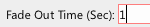
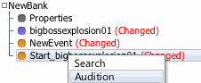
When the second event "New Event" is auditioned, it uses the Label Query set up in step 8 to look for sounds to affect. Since the label query merely matches any sounds with the label you created, it finds the sound started with the first event, and fades it out over 1 second.
 Playing A Sound Playing A Sound |
 Sound Designer User Guide Sound Designer User Guide |
 Cross Fading Cross Fading |

|
Miles Sound System 9.3b
E-mail miles3@radgametools.com for technical support. Copyright © 1991-2012 by RAD Game Tools, Inc. All Rights Reserved. |

|